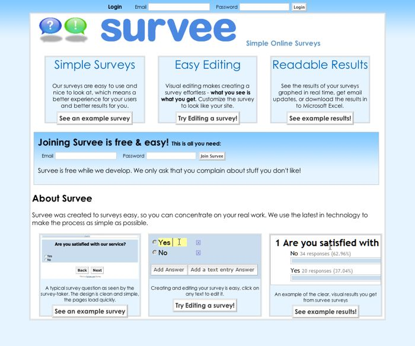

What I learned from my failed web 2.0 project
From April till December 2006, I designed and coded survee.com (see some cached pages), an attempt to- build an new approach to online surveys
- explore AJAX coding
- Start a company
- try out new interaction models
When I started the project, I was very comfortable with my job and looking for new challenges. After learning about all the change that had happened to browser scripting (for example DOM scripting and XMLHTTPREQUEST, aka "AJAX") since I had stopped doing JavaScript in disgust in 2000, I was excited about the possibilities and wanted to try them out. As I am a User Experience designer/ analyst in my day job, I was also excited about the UI possibilities, and felt that the best way to come up with new ideas was to invent something. I was coincidentally unhappy with the survey tools I used (surveymonkey.com and many others) and thought this was a good opportunity, particularly as surveys consist of user-generated content. I wanted to make a tool, not a site. It was a heady time; 37Signals "Get Real" was an inspiration. After 11 years of designing sites for other people, I was in control of my own project. Sole responsibility was a great feeling. 
I surveyed some friends, who thought this was a good idea, then I started designing.
I followed some interesting current ideas, including separating content from style & behavior. I learned about the power of CSS and was much impressed.
I decided to make an AJAXy interface with each survey being stored in one HTML document.
and all interaction (showing one question at a time was a key design idea) done via javascript. The same document worked for non-Javascript browsers through careful use of stylesheets. (I was very proud of this questionable feature.)
Some things I learned:
It was a lot of fun and very fulfilling. Having your own company is great. YOU did it. Plus coding something that then works is a great feeling.
It's hard to do it alone! Having someone who
- understands what you are working on
- cares
Other people's attention is INVALUABLE! and surprisingly hard to capture. Your best friends do not want to spend their time talking about your project. Just because it is exciting to you does not make it so for them. You become in a sense, crazy; focused on something other people don't care about (yet). Yet if you don't talk about it, you lose heart. It is hard to find out how unimportant it is to other people: that 5 minutes of time you were asking for to look at it never happens.
You have to be disciplined. I think I did OK on this. We have no TV and I canceled Netflix. I worked on it 2 hours a day and stayed up late on weekends. I stopped reading books. But it is a marathon, not a sprint.
Starting a company has to work at this time in your life. We had a baby during this time, and in the end, the lack of sleep and desire to play with our new little guy won over the project. Also, I got a great new opportunity and changed jobs. Both wonderful changes, but doom for the project. I imagine that just-post-college kids have an edge here. Every decision to work on the project is a decision to NOT do something else. For those of us who have a life: family they enjoy, a house that needs repair, cooking, washing dishes,etc , life is the real competition. A single person eating take out in an apartment is a better situation.
I had thought, after a year of hard development, I can iterate more slowly and have a life. I didn't get there.
Test it on real people. this keeps you honest. Spend time every day watching someone use the tool. Buy them coffee in a Internet cafe or something.
I should have used that most common browser for development. I worked on a mac (with Windows running via Parallels for testing). This was a mistake. My excuse: IE has poor javascript error communication. This lead to less focus on bug fixing and avoiding IE incompatibilities. I always made it work on IE, but it took longer than it should have.
You have to make each annoying development step as easy as possible, otherwise you won't do it as often as possible. Make browser shortcuts, write scripts, whatever. This is a marathon. Make your office / workspace comfortable.
Iterate in public. I fell into the trap of not rolling things out often enough. I kept adding features and delaying promoting it. "Once it has [rich text editing, whatever] people will really like it." This gave me cover to avoid facing the real word.
Build the application around the "help" content. Don't explain the how something works, focus on what it should do and write the text first, then design the way it works. I would reserve a column for it in the interface and make an initial animation highlighting it.
Technologically, we are not there yet. Expect to spend most of your time on stupid details. I decided to not support any pre 5.0 browsers with my Javascript version to keep me sane, but even so, there are still many annoying barriers to developing good ideas for people, for example browser incompatibilities, MySQL variations between the versions on my local dev box and my host, etc. My head is full of some of these quirks, which I will forget very soon and anyway will be solved and replaced with new ones.
Comment everything ad nauseum. You, or at least me, will forget everything in a few weeks. You are not writing it for others, but for your future self. Imagine you have memory loss like the movie MEMENTO. Don't just explain what is happening, explain WHY you are doing it. "This is because of an IE6 bug"
There are some ideas I was happy about in the project.
I tried out what I call EIAE Everything Is Always Editable. I had no display mode and editing mode. If you saw some text, it was an editable field. This was more javascript, but it was cool. Perhaps a bit too cool as people did not expect to change their password so easily, but in general, I think this is the future.
I cut through a lot of the user blocking interfaces. Disk space is cheap. Signup took 2 fields: email and password. If you clicked "try editing a survey" you got an account, all you needed to do was change the email address. If there were a lot of garbage abandoned accounts, I'd clean them out later.
I only got to do part of what I had initially envisioned regarding graphing (one of the main reasons I started the project in the first place). but the little I did, I think was clean and clear.
In the end, I think it was a good design, but I didn't have the time to really bring it to market. The effort of publishing and promoting was a lot more than I expected. A partner with knowledge might have changed this.
I'd like to do it again. (Once the kids are grown up a bit.)
Comments
copyright © Stephen Turbek